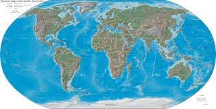

Geografija  Географија или земљопис је комплексна наука која проучава природне и друштвене појаве и процесе у геопростору, те везе и односе између њих Етимолошки елементи (морфеми) према којима је настала реч географија јесу префиксни морфем гео- који долази од грч. γεο- земљо-, који се односи на земљу; γῆ Земља, те суфиксални морфем -графија који долази од грч. -γραφια -пис(ање), а сродан је морфемима -граф, -графика, -графички, -графизам, грч. -γραφος -писац, који пише; γράφω пишем, γραφικός писмени.[9][10] Географија тада није била наука с одређеним објектом и циљем проучавања, већ нека врста опште енциклопедије о Земљи